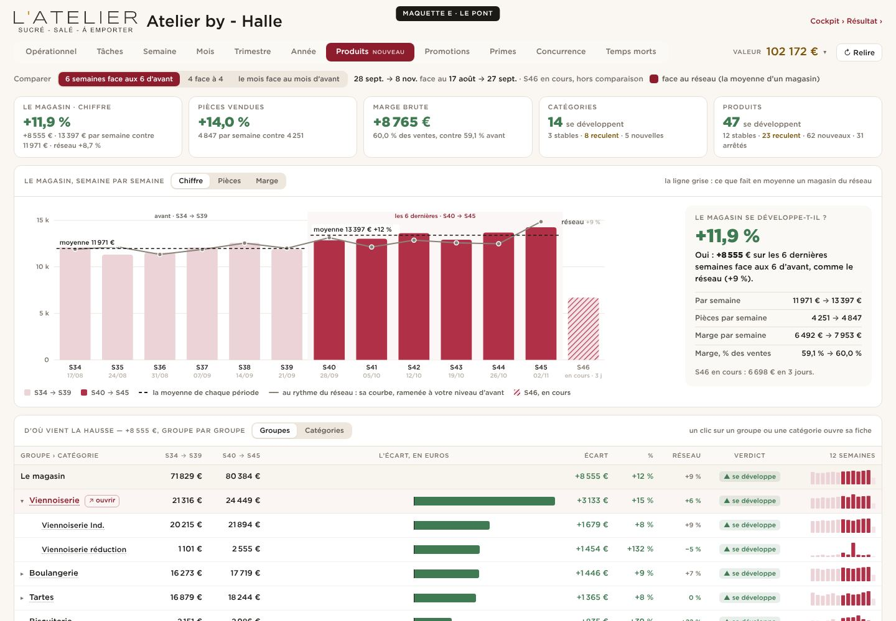
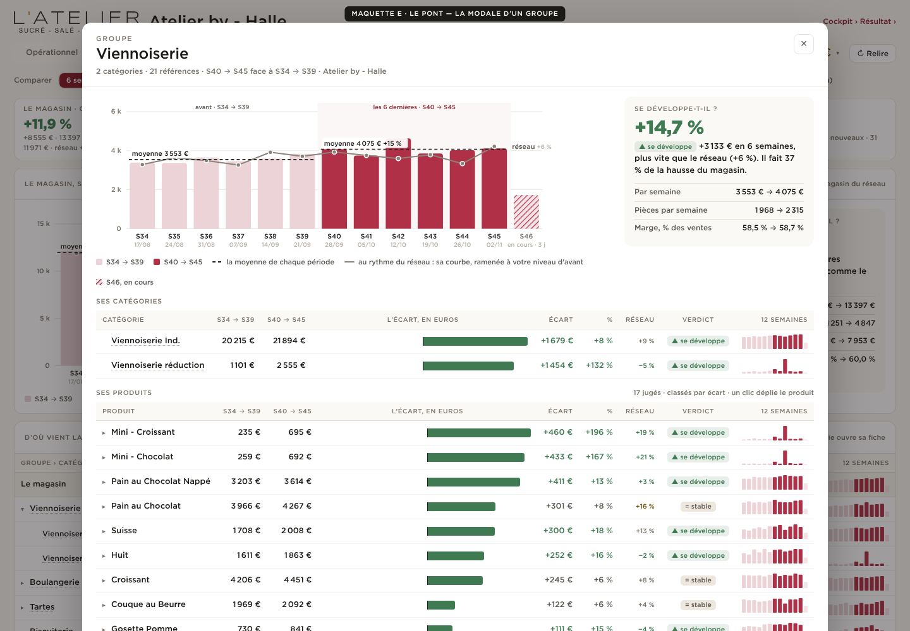
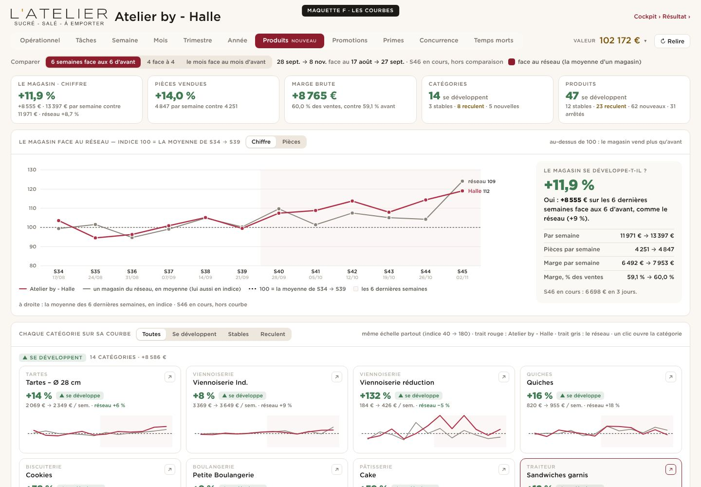
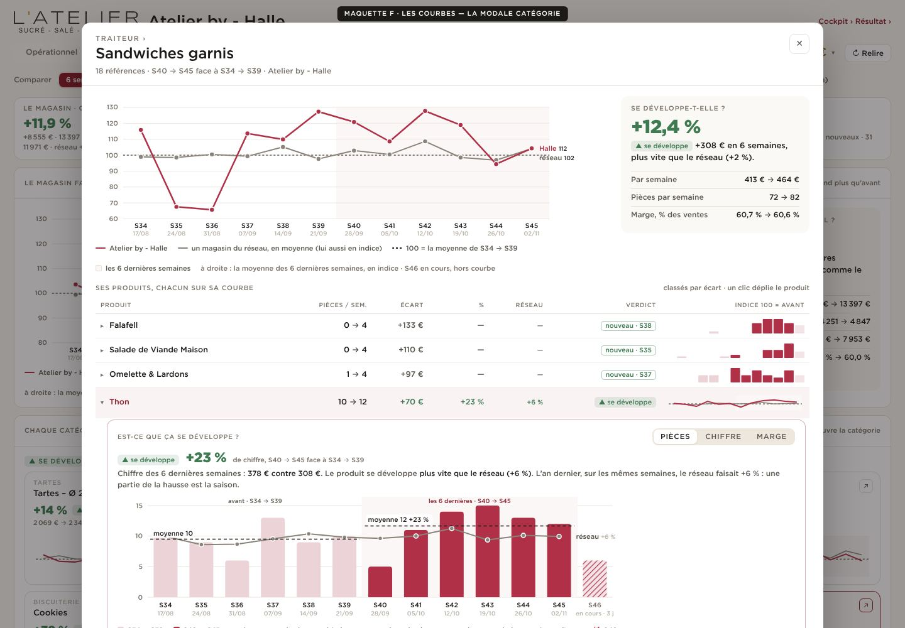
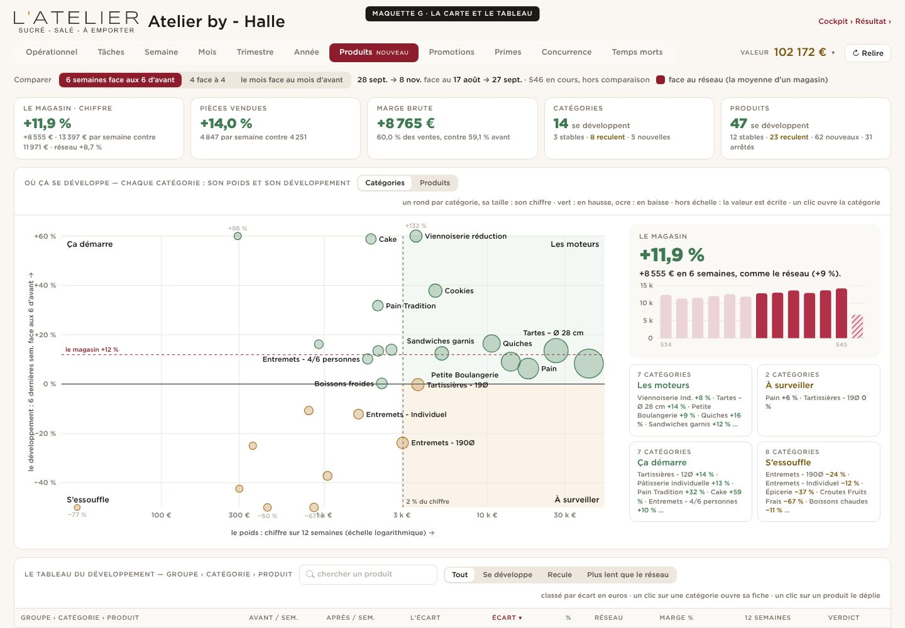
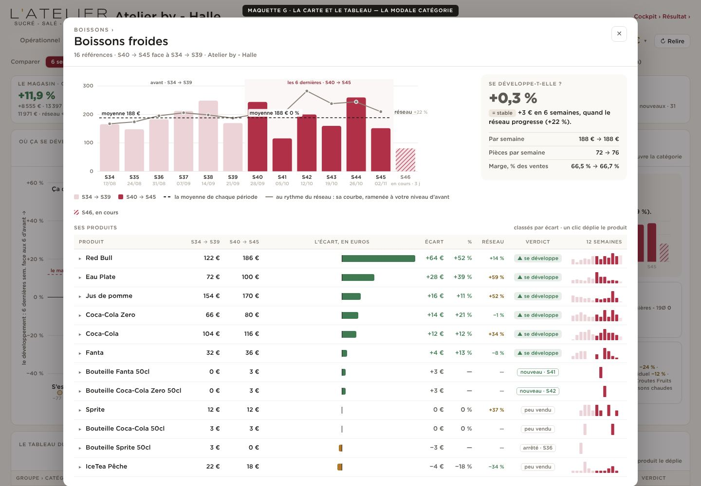

D’où vient la hausse du magasin, groupe par groupe, en euros ; dessous, deux listes : ce qui se développe, ce qui recule.


Chaque catégorie sur sa petite courbe (indice 100 = avant), face au réseau ; rangées en « se développent », « stables », « reculent ».


Les catégories placées selon leur poids et leur développement (moteurs, à surveiller, ça démarre, s’essouffle) ; le tableau groupe › catégorie › produit dessous.

